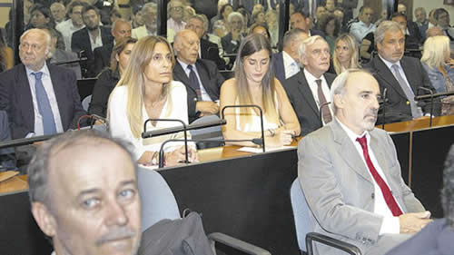

Real Chubut - Agencia de Noticias


Un plan de impunidad que no quedó impune

El Tribunal Oral Federal 2 dictó penas de 6 años para el ex magistrado y de 4 años para el ex jefe de Inteligencia. Menem fue absuelto y los ex fiscales Mullen y Barbaccia recibieron penas menores. Familiares de las víctimas piden la renuncia de Garavano.
A casi 25 años del atentado a la AMIA, el Tribunal Oral Federal número 2 consideró probado el pago de sobornos para desviar la investigación judicial y así impedir el esclarecimiento del ataque terrorista más tremendo que sufrió el país. El fallo, que consideró el encubrimiento de la voladura a la sede central de la mutual judía como una "grave violación a los derechos humanos", impuso condenas leves a quien tuvo en sus manos el caso durante casi la primera década, el ex juez Juan José Galeano y los ex fiscales Eamon Mullen y José Barbaccia. También condenó al ex secretario de Inteligencia menemista Hugo Anzorreguy, y a su número dos, Carlos Anchezar, pero absolvió al ex presidente Carlos Menem. Desde sus diferentes querellas, los familiares de las víctimas y sobrevivientes del atentado valoraron que el TOF confirmara la existencia del plan de encubrimiento y las responsabilidades de los ex funcionarios, aunque aseguraron que apelarán las condenas, que consideraron bajas, y las absoluciones. "Este fallo demuestra que todo lo que los familiares denunciamos era cierto, incluso a pesar de las presiones que recibió el tribunal de parte del Gobierno", apuntó Adriana Reisfeld, de Memoria Activa, quien reclamó, además, la renuncia del ministro de Justicia Germán Garavano "por sus intentos descarados para salvar a los ex fiscales" Mullen y Barbaccia (ver aparte). "Si tiene vergüenza debería renunciar hoy mismo", insistió. Los fundamentos del fallo se conocerán en mayo.
La última audiencia del juicio por el encubrimiento del atentado a la AMIA, la que le puso cierre a casi cuatro cansinos años de debate, comenzó ayer a las 11 de la mañana con la invitación a Menem y a Anzorreguy a decir lo que quisieran antes de oír el veredicto del tribunal. De los 13 acusados, eran los últimos a los que les faltaba hacer uso de este derecho y los dos lo rechazaron. Minutos después de iniciada la audiencia, los jueces Jorge Gorini, Karina Parrilli y Néstor Costabel se retiraron en cuarto intermedio hasta las 16, cuando volvieron, puntuales como casi nunca en el proceso, para leer su decisión.
El fallo fue unánime. Lo primero que dijeron los jueces fue que consideraban el encubrimiento del atentado, que en julio de 1994 mató a 85 personas e hirió a cientos, era un hecho de "grave violación a los derechos humanos". No lo calificaron, como lo exigió la Agrupación por el Esclarecimiento de la Masacre Impune de la AMIA (Apemia), un delito de lesa humanidad, pero aún así validó su imprescriptibilidad. Luego informaron los rechazos a todos y cada uno de los pedidos de nulidad del proceso formulados por diferentes defensas. Y de inmediato, llegaron las condenas, que fueron bajas y se basaron todas en el pago de 400 mil dólares al reducidor de autos Carlos Telleldín para que inventara la vinculación de policías bonaerenses en la explosión.
La pena más alta fue para Galeano, a quien condenaron a 6 años de cárcel por su participación necesaria en el soborno, prevaricato, encubrimiento y violación de pruebas. La querella de Memoria Activa había solicitado 20 años de prisión para el ex juez, el pedido más duro. Por el soborno y el plan de encubrimiento, a Anzorreguy los jueces le impusieron 4 años de encierro. Al subsecretario de Inteligencia, Anchézar, lo inculparon de violación de prueba y falsificación de documentos públicos y le destinaron 3 años de cárcel. Los mismos cargos y la misma pena le impusieron al comisario Carlos Castañeda. A Telleldín también lo condenaron a 3 años de prisión, pero por haber participado del soborno. Además, le exigieron los 400 mil dólares que cobró por mentir.
Las penas más cortas las recibieron la ex esposa de Telleldín, Ana María Boragni, y los ex fiscales: 2 años de prisión de cumplimiento condicional. El único cargo que les endilgaron los jueces fue el de haber incumplido con sus deberes de funcionario público. Estaban acusados de haber participado del soborno así como también de haber privado ilegítimamente de la libertad a los policías que fueron inculpados falsamente por Telleldín como la conexión local de los iraníes para perpetrar la explosión de la bomba en la vereda de la AMIA. Por ese hecho, los policías, querellantes en el juicio que terminó ayer, pasaron siete años presos y fueron enjuiciados.
Los cargos que explicaron las condenas no hacen referencia a la interrupción de la investigación sobre la llamada "pista siria" en el esclarecimiento del atentado. Aquella ponía el foco en Alberto Kanoore Edul, un ciudadano proveniente de familia de origen sirio con vínculos aceitados con Menem y su clan. Galeano llegó a ordenar allanamientos y escuchas en la casa y las líneas telefónicas de esta persona, medidas de prueba que fueron adulteradas y desaparecidas luego de una reunión entre Kanoore Edul padre y Munir Menem, por entonces secretario de Presidencia. Tal vez la ausencia en el fallo de toda referencia a esta pata del encubrimiento explique la absolución del ex presidente, uno de los puntos de la sentencia que hizo más ruido (ver aparte). Habrá que esperar a tener acceso a sus fundamentos, que estarán a disposición pública a partir del 3 de mayo próximo. Además de Menem también fueron absueltos Jorge "Fino" Palacios, quien estuvo a cargo de los allanamientos a la casa de Kanoore Edul hijo; el agente de inteligencia Patricio Finnen, y el ex abogado de Telleldín, Víctor Stinfale. El ex titular de la DAIA Rubén Beraja tampoco recibió condena.
A pesar de lo bajo de las condenas y las absoluciones, el fallo sorprendió a los referentes de familiares de las víctimas del atentado que impulsaron la investigación sobre el encubrimiento del ataque terrorista y que participaron del debate oral desde diferentes querellas. Es que las expectativas era aún más bajas. En general, destacaron que la sentencia reconoce en parte tantos años de lucha. "Memoria Activa tenía razón", gritaron una vez que Gorini dio por finalizado el juicio los integrantes de esa agrupación reunidos en un círculo aún dentro de la Sala AMIA de los tribunales de Comodoro Py. "En parte se logró el objetivo ya que todo lo que dijo Memoria Abierta quedó comprobado", evaluó Reisfeld, quien destacó que el TOF 2 haya condenado a los ex fiscales "a pesar de las presiones del Ministro de Justicia Germán Garavano, que si tiene vergüenza debería renunciar hoy mismo". El abogado de la agrupación, Rodrigo Borda, coincidió y añadió que después de conocer los fundamentos apelarán las absoluciones así como los montos reducidos de las penas. "Son bajas, sobre todo la de Galeano a quien el tribunal le está comprobando delitos que son muy graves. Nos queda este sabor amargo", sostuvo.
Para Laura Ginsberg, referente de Apemia, al sabor amargo de las condenas bajas se le suma el hecho de que además, "no van todos presos". "Eso es lo más difícil de digerir", mencionó y aunque insistió en que "estas condenas no son suficientes", rescató que "demuestran que aquí hubo en la cabeza de funcionarios de primera línea del Estado una responsabilidad". "Nosotros sabemos que esto no se termina acá, que hay muchos más involucrados en esto que fue un plan de encubrimiento criminal por parte del Estado argentino y que es el Estado en tanto tal el responsable. Todavía falta avanzar sobre todo el resto, algo que por supuesto no sucederá en los tribunales sino que requiere de una comisión investigadora independiente y de la apertura de los archivos secretos", sumó.
"Lo principal es que quienes nos quitaron la posibilidad de saber qué pasó con el atentado a la AMIA hoy están condenados. Esos tres hijos de puta que dijeron que nosotros habíamos armado todo esto para cobrar indemnizaciones hoy están condenados", concluyó Sergio Burstein, querellante por la agrupación 18J.
Fuente: Pagina 12